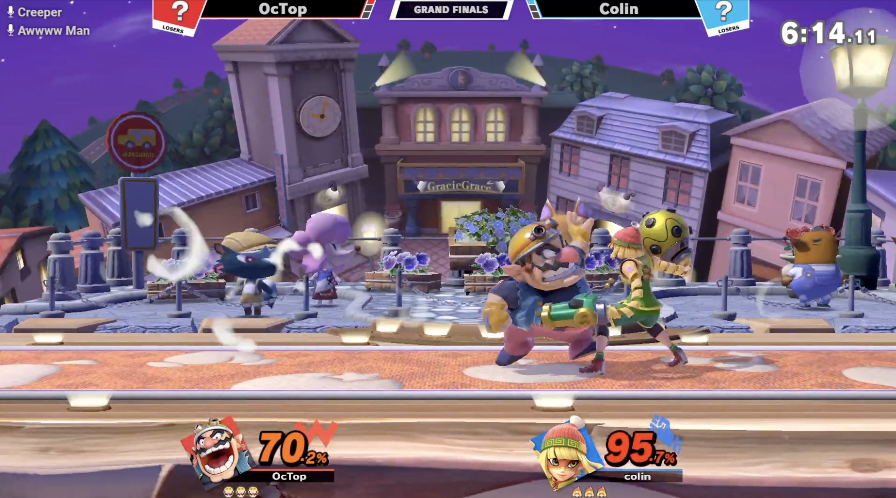

Melee
Our Mission
The smash staple since 2001 continues to thrive with our community here at Cornell. At Cornell Smash, we are accepting of players at any skill level, and Cornell Melee is no exception. Despite being a difficult game to outisders, if you haven't tried it, we encourage you to come and play with us! If you need a controller, feel free to let us know and will bring one for you to use!

Latest (3) Tournament Results
Cornell Melee Biweekly 54 Results


Ultimate
Our Mission
Being the most recent game in the Smash Bros series, Super Smash Bros Ultimate has the most thriving and active community out of any other fighting game here at Cornell. As is normal with the club, Cornell Ultimate is accepting of all skill levels, so feel free to drop by and play some Ultimate with us! You don't need to bring your own setups, but it's always appreciated if you can! Make sure to bring your controller, however don't hesitate to ask someone if you dont have one. We will try to bring you one!
Latest (3) Tournament Results
Cornell Ultimate Biweekly 54 Results
Cornell Ultimate Biweekly 53 Results

Cornell Ultimate Biweekly 51 Results

Other Games
Rivals of Aether
Rivals of Aether is an indie fighting game that is very similar to smash in many ways. Although Rivals may not be the most popular game at Cornell Smash, you can feel free to bring your own setup and come and play Rivals with others! Whenever someone brings Rivals to our meetings, people love to come try it out and play it!
Everything else
What about other games?
Cornell Smash is primarily for Smash Melee and Ultimate, and if you're interested in playing any other fighting games or competitive esports, we heavily suggest you go check out Cornell Esports . If you would like to bring your own setup to meetings for other fighting games, we will glady accept and play them, but know that Smash is our clubs focus.